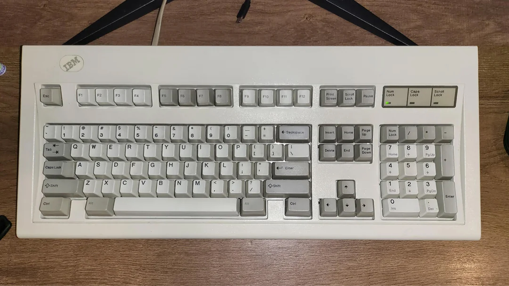
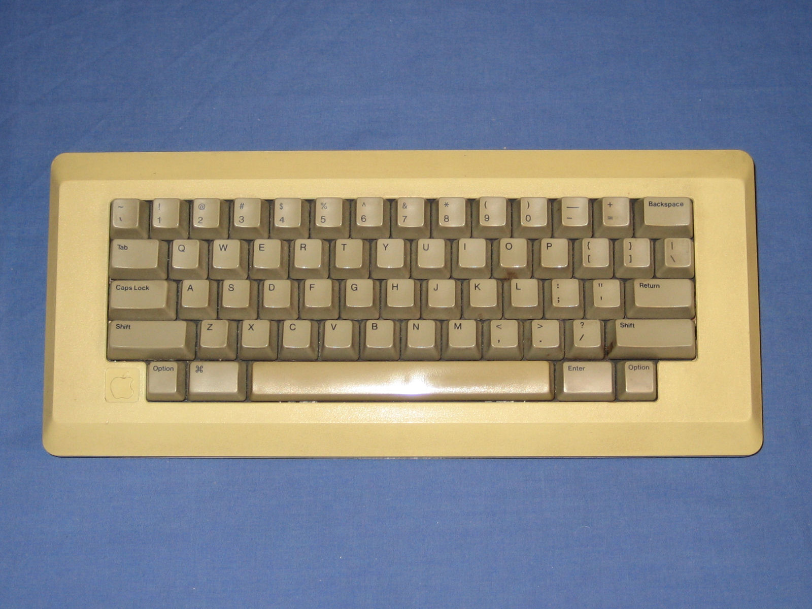
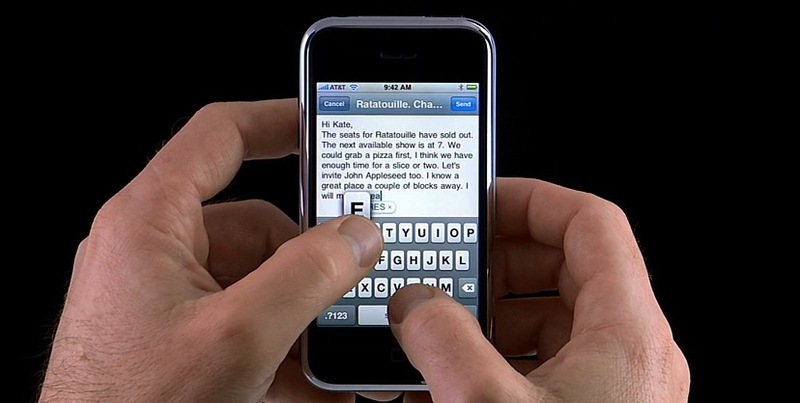
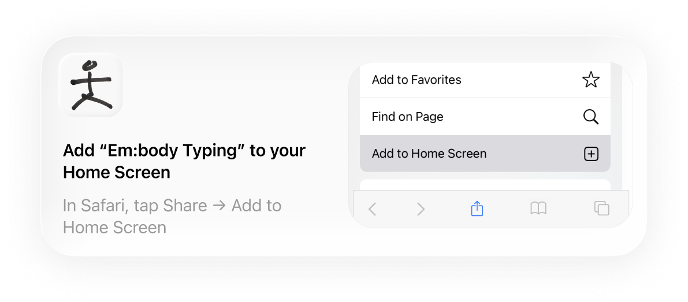
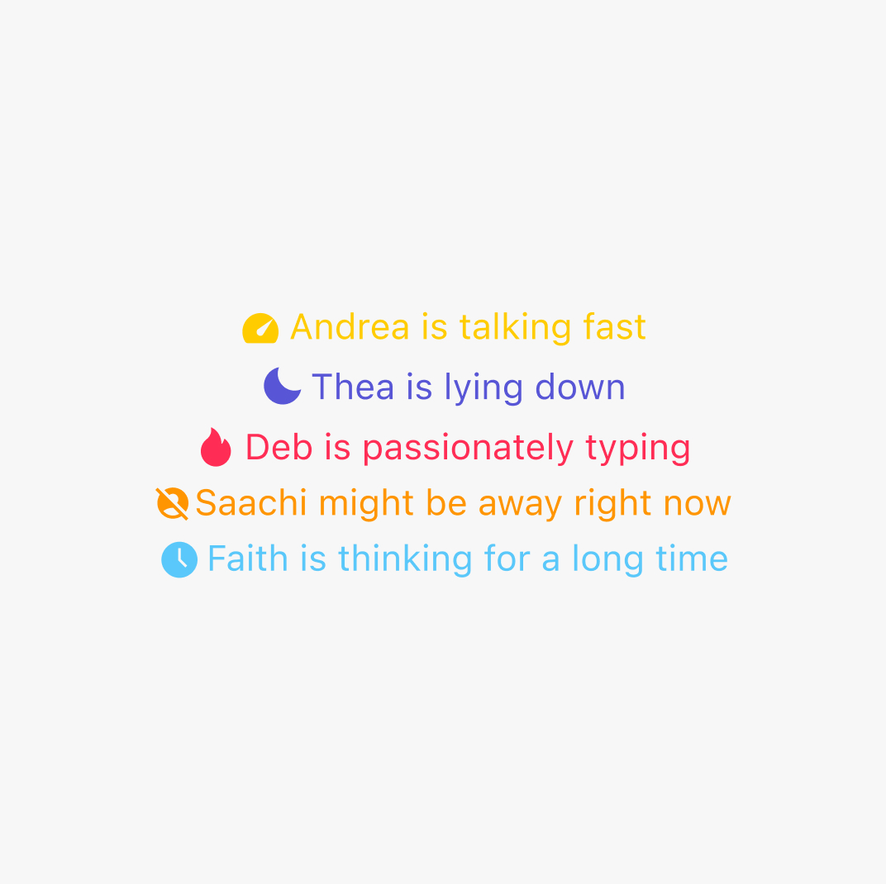
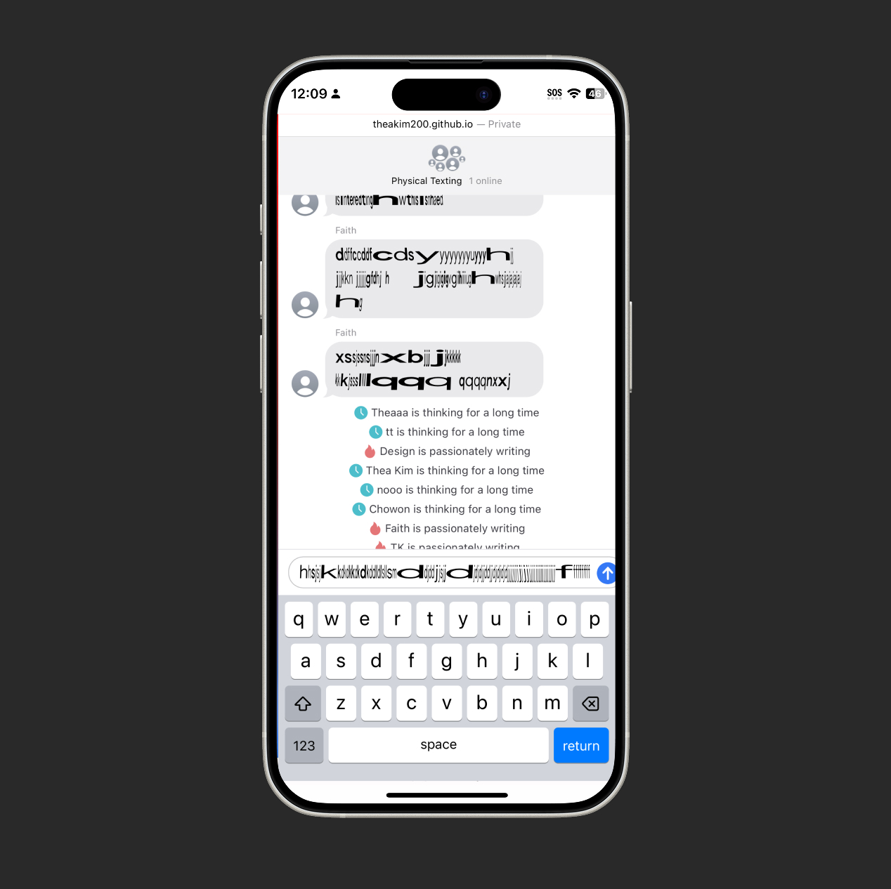
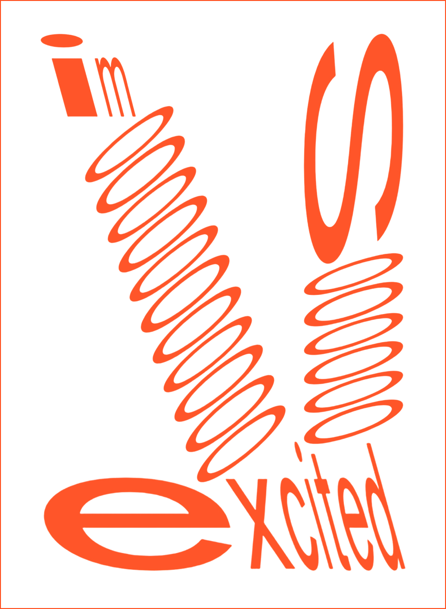
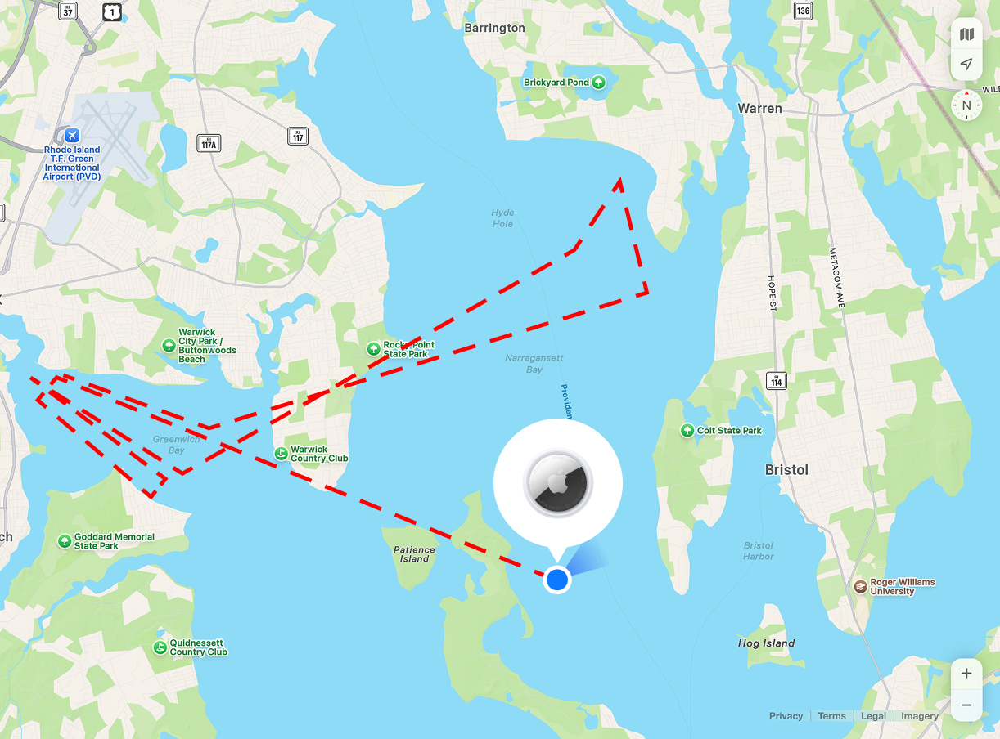
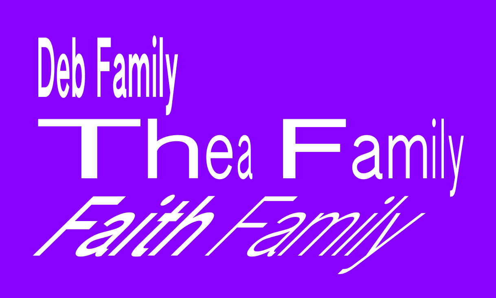
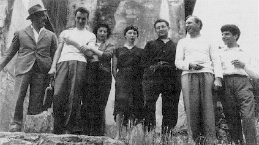

Digital typing has become uniform, fast, efficient, but also disembodied. Every keystroke produces identical letters, erasing the physical presence of the writer. Situated Sans challenges this reproducibility. What if digital text could carry traces of your body? Your posture, your breathing, your rhythm, your physical state in space and time? Situated Sans is a variable typeface that makes typing a physical act again, revealing who you are beyond the screen. This typeface doesn't just transmit meaning but embodies the situation of writing. Each message becomes unrepeatable, carrying the physical and contextual reality of its creation. Typography becomes a record of the body: where you are, how you move, how you breathe, how you feel in the moment of typing.





A doctor's first fee note from 1953
Em:body Typing is a web-based chat application that uses Situated Sans to make typing a physical act again. Big tech companies have attempted to personalize digital text through animations, but these remain aesthetic choices rather than traces of the body. In this chat, letterform draws attention to the body beyond the digital text by interacting with the writer through pressure, orientation, and rhythm. Typing is more than input and output, but a personal act that reveals who you are. Your typing carry traces of your body's position, emotion, breathing, and more, bringing humans back into digital communication.

This site is live. Visit and leave your trace!
embody-typing.live




A recording of a conversation with a friend using Em:body Typing

Catch Phrase

Driftwood Project

Family Family
Situationist International was a 1960s avant-garde movement that critiqued how capitalism turns life into passive spectacle. Led by Guy Debord, they argued we've lost direct, embodied experience and everything is mediated through images and consumption. They valued 'constructed situations' and moments that break routine and make us actively present. Central to their philosophy was psychogeography: the idea that our physical surroundings and bodily states shape our experience, and a rejection of the uniform, reproducible nature of mass culture. Situated Sans applies this critique to typography. Digital text has become uniform and disembodied, producing identical letters that erase the physical presence of the writer. This font responds to your complete physical state, making each typing moment a unique, situated experience. It moves away from reproducibility. You cannot write the same sentence identically twice. Situated Sans is designed as a framework for embodied typography that extends beyond any single application. Any parameter that situates the body in space, time, and circumstance can become typographic expression. Typography becomes a record of your full presence in the moment of writing, bringing the body back into digital text.



Caption 1
Download the font files and start experimenting! The package includes OTF and variable font formats. Drop the variable font into your project to access all axes through a single file. These snippets map device orientation, touch pressure, and typing speed to font variation axes. But any data source works: scroll position, mouse movement, audio input, time of day. Let the world write with you!
window.addEventListener('deviceorientation', (e) => {
const italic = ((e.gamma + 90) / 180) * 100; // 0–100
el.style.fontVariationSettings = `'ital' ${italic}`;
});
el.addEventListener('touchstart', (e) => {
const r = (e.touches[0].radiusX + e.touches[0].radiusY) / 2;
const weight = Math.min(150, Math.max(60, 60 + ((r - 20) / 30) * 90));
el.style.fontVariationSettings = `'wght' ${weight}`;
});
let lastTime = null;
el.addEventListener('keydown', () => {
const interval = lastTime ? Date.now() - lastTime : 0;
lastTime = Date.now();
const width = Math.min(100, Math.max(0, (interval - 100) / 1100 * 100));
el.style.fontVariationSettings = `'wdth' ${width}`;
});
Situated Sans is free for personal, educational, and non-commercial use under the WTFPL. For commercial use, license by company size. For student, broadcast, or enterprise inquiries, contact theakim200@gmail.com
Situated Sans is based on Authentic Sans by Authentic Business Company LLC.
| Design | Thea Kim |
| Families | Condensed, Regular, Extended |
| Static Styles | Light, Light Italic, Regular, Regular Italic, Bold, Bold Italic × Condensed, Regular, Extended |
| Variable Axes | Weight, Width, Italic |
| File Formats | otf, ttf |
| Release Year | 2025 |